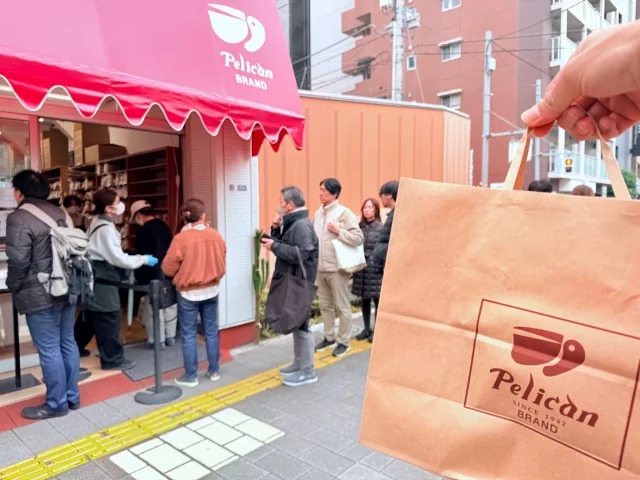
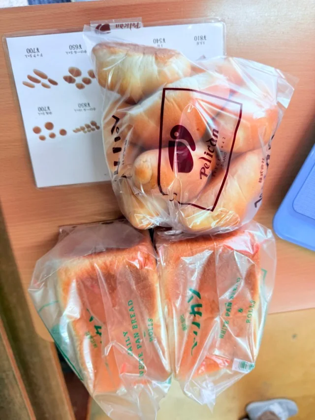
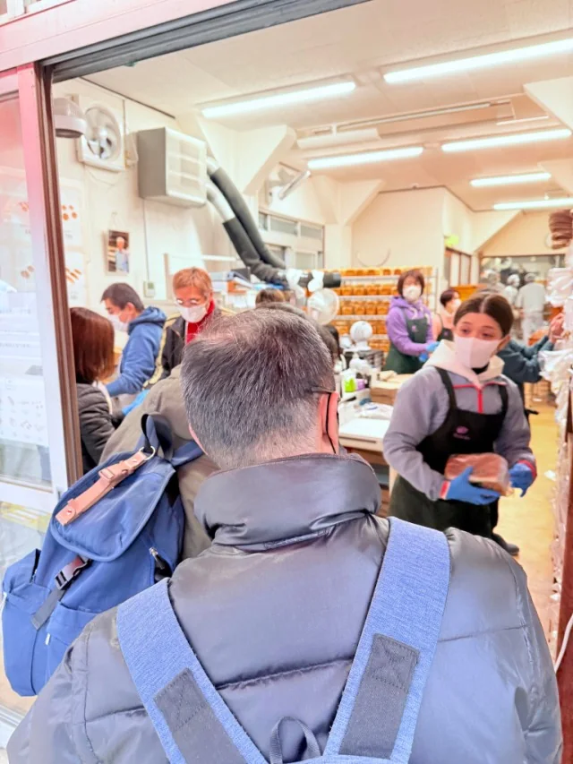
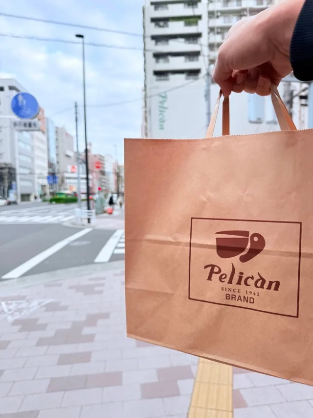
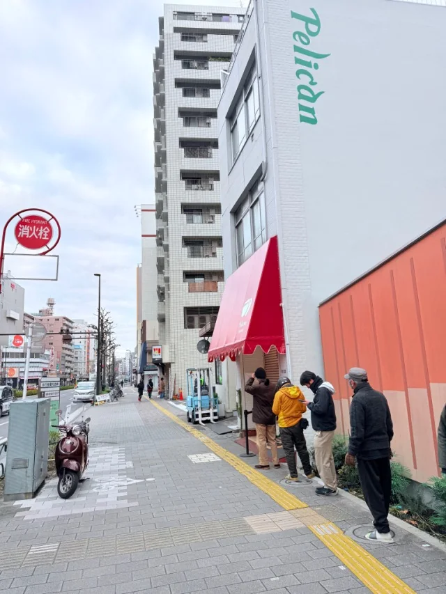
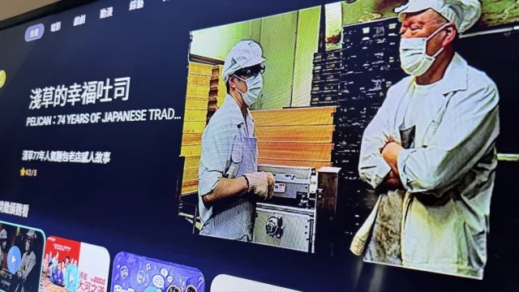

《淺草的幸福吐司》：麵包還沒吃，就先記住了她們待人的樣子


《淺草的幸福吐司》：麵包還沒吃，就先記住了她們待人的樣子
去年去鵜鶘麵包店買麵包時，我改過訂單，也調整過取貨時間。
店外一直有人排隊，接待的她依舊不疾不徐，仔細聽完需求，再協助修改。遇到彼此沒辦法講明白的地方，也馬上有人過來，和顏悅色地一起聽、一起處理。
排隊的人多，照理說很容易讓人感覺：下一位，快一點。
但那次沒有。

颱風假的晚上，在 friDay 影音發現《淺草的幸福吐司》，才知道去年買過的這間店，原來拍過紀錄片。看到熟悉的店名，買麵包那天的記憶也跟著回來了。
鵜鶘麵包店，パンのペリカン，1942 年創立於東京淺草。開了八十多年，做的主要就是吐司與餐包兩類，尺寸和形狀再各有不同。光看這個介紹，很容易先把「老店」、「名店」、「職人」幾個字放進腦袋。
但我對那次購買過程最深的印象，是一種優雅感。
說優雅，好像又會讓人想到高貴的姿態。其實現場給我的感受很平常：有問題可以問，沒說清楚可以再說，需求有變動，就一起確認怎麼處理。整個過程讓人心平氣和，買完也覺得滿意。
她們並沒有特別強調自己的麵包有多厲害。生意那麼好，也還是願意把眼前這筆訂單聽清楚。
這件事，我到現在還記得。

電影裡有位客人的反應，我也很喜歡。照我的理解，他大意是說，並沒有那麼驚人的好吃，可是吃不膩，隔一段時間又會想吃。
這種評語放在美食宣傳裡，大概會讓人猶豫一下：這段真的要留嗎（笑）。
但我反而覺得很真切。
我們平常會一直買的東西，也不見得每次入口都要驚呼。知道它是什麼味道，知道自己想吃，今天吃完，下次還願意買。這樣的喜歡其實很實在，也很難得。
看著紀錄片，再想起自己的購買經驗，我會覺得，麵包和服務是接在一起的。
如果那天因為溝通不清，或更改取貨時間而被不耐煩地對待，即使麵包好吃，這段旅行記憶應該也會很不一樣。名店的名氣可以讓人特地找過去；到了現場以後，客人記住的事情，就不完全由店家說了算。
尤其做服務工作，看過忙碌時的現場，就知道保持耐心沒有說起來那麼容易。人一直來，同樣的問題反覆問，還有講不清楚、需要別人幫忙的時候。這些都得花時間。
所以我很在意她們當時願意花的那一點時間。
「職人」這個詞，有時候被說得離人太遠了，好像一定要有什麼驚人的堅持，或值得被寫成傳奇的故事。
職人也是人。每天要工作，要面對客人，也會遇到不順利的事。盡心對待所見所為，讓來買麵包的人把事情辦好，已經是很值得尊敬的工作了。
至於真心付出，世界是不是一定會回報，倒是沒有那麼確定。
但至少有一位去年來買麵包的客人，在颱風假的晚上看了電影，又想起她們怎麼聽自己說話。
下次去淺草，還會想再買。

⸻
關於這部電影
《淺草的幸福吐司》由內田俊太郎執導，日文片名為《74歳のペリカンはパンを売る。》。電影記錄淺草鵜鶘麵包店的工作日常與傳承，也讓鏡頭前的顧客說說，為什麼會一直回頭來買麵包。
